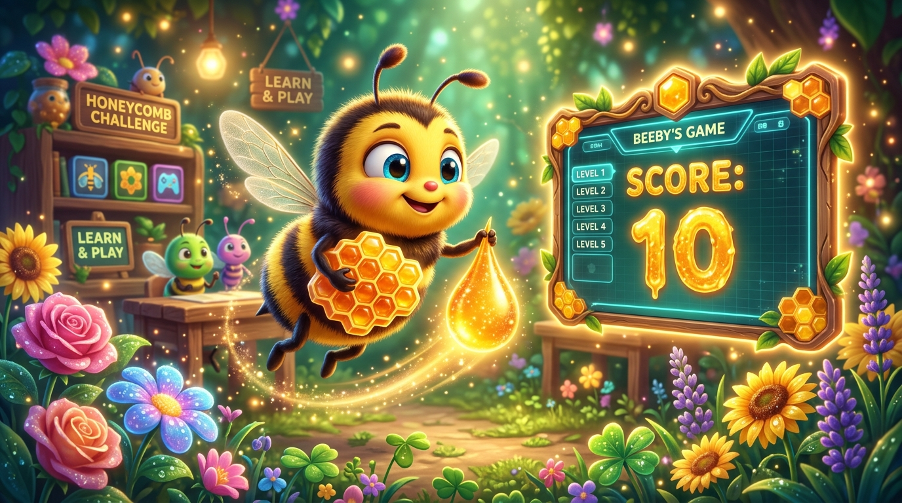

Panen Madu & Variabel Skor! 🍯📊
Mengenal Variabel sebagai Kotak Celengan Penyimpan Angka di Scratch 3.0 untuk Mencatat Setiap Poin Kemenangan!

Bagaimana Game Mengingat Poin Kita? 🤔🎯
Pernahkah kamu bermain game dan melihat angka skor terus bertambah?
Memori Manusia
Kita mengingat di dalam otak: "Aku sudah makan 2 buah permen!" Tapi komputer tidak punya otak biologi seperti kita.
Memori Komputer
Komputer menyiapkan Kotak Khusus di memorinya untuk menyimpan angka. Kotak inilah yang disebut Variabel!
Celengan Madu Beeby
Setiap Beeby memetik setangkai bunga nektar, angka di dalam celengan bertambah +1 poin!
Analogi: Celengan Berlabel Nama 🏷️🐖
Tiga aturan penting tentang Variabel yang harus kamu ingat:
Beri Label Kotak
Kotak harus diberi nama agar tidak tertukar. Hari ini kita buat kotak bernama "Skor"!
Variabel = Bervariasi
Nilai di dalamnya bisa bertambah (0 ➔ 1 ➔ 2) atau berkurang jika terkena rintangan.
Reset ke Nol!
Saat game baru dimulai, celengan harus dikosongkan kembali menjadi 0 agar adil!
Dua Blok Oranye Sakti Variabel 🧙♂️📦
Jangan sampai tertukar antara SET (atur) dan CHANGE (tambah):
Fungsi: Mengosongkan celengan skor kembali ke angka nol tepat saat bendera hijau diklik di awal permainan.
Fungsi: Menambahkan satu koin poin ke dalam celengan setiap kali Beeby berhasil memetik setangkai bunga nektar!
Koding Bunga: Sentuh, Tambah Skor, & Hilang! 🌸✨
Susun blok ini pada Sprite Bunga di panggungmu:
Mengapa Harus Ada Blok "Hide"?
Jika bunga tidak disembunyikan (hide), Beeby yang masih menyentuh bunga akan terus memicu skor bertambah ratusan poin dalam 1 detik!
hide, wajib ada blok show di bawah bendera hijau agar bunga muncul lagi saat game diulang!
Lab Simulasi Panen Madu & Skor 🍯🕹️
Klik bunga-bunga di padang rumput untuk memanen nektar dan lihat angka skor bertambah!
Trik Menggandakan Bunga (Duplicate) 📋🌸
Tidak perlu menyusun kode blok dari awal untuk setiap bunga!
Selesaikan 1 Bunga Pertama
Pastikan bunga pertama sudah memiliki kode lengkap (Show, Touching Bee, Coin Sound, Change Skor, Hide).
Klik Kanan ➔ Pilih "Duplicate"
Di panel sprite pojok kanan bawah, klik kanan ikon bunga -> pilih Duplicate (Gandakan) sebanyak 5 sampai 6 kali.
Sebar Bunga ke Sudut-Sudut Labirin
Tarik bunga-bunga baru ke lorong-lorong labirin yang berbeda agar pemain tertantang menjelajah seluruh peta!
3 Bug Paling Sering Terjadi pada Variabel 🕵️♂️🔍
Solusi cerdas saat sistem skormu mengalami kendala:
Skor Langsung 100 Poin
Bunganya lupa di-hide! Pasang blok hide tepat setelah change Skor by 1.
Bunga Lenyap Selamanya
Saat bendera hijau ditekan lagi, bunganya tidak muncul? Lupa memasang blok show di awal bendera hijau!
Skor Tidak Kembali ke Nol
Game baru mulai tapi skornya masih sisa kemarin? Pastikan ada blok set [Skor] to 0 saat bendera hijau diklik!
Tantangan: "Bunga Emas Raksasa (+5 Poin)!" 👑🌻
Beri kejutan spesial untuk pemain game labirinmu:
Misi Kamu Hari Ini:
- ✔ Buat variabel baru bernama Skor di Scratch.
- ✔ Pasang minimal 5 bunga biasa bernilai +1 poin di lorong labirin.
- ✔ Pastikan skor kembali ke 0 saat bendera hijau ditekan.
- ⭐ Bonus: Buat 1 Bunga Emas tersembunyi yang memberi bonus +5 poin dan suara kembang api!
Badge Spesial Sesi 10
Siswa yang berhasil membuat sistem skor mandiri berhak memakai lencana "Junior Score Architect"!
Panen Akbar Skor Tertinggi & Tepuk Koding! 👏🎉
Pamerkan game panen madu buatanmu dan lihat siapa yang berhasil meraih skor sempurna!
🌟 Turnamen Panen Madu Cilik:
1. Siswa memainkan gamenya dan memamerkan toples skornya.
2. Pastikan semua bunga hilang saat dipetik dan muncul lagi saat diulang.
3. Rayakan keberhasilan seluruh kelas dengan Tepuk Koding!
🕷️ Bahaya Mengintai di Sesi 11:
Ada musuh laba-laba jahat yang berpatroli mondar-mandir otomatis di lorong labirin! Kita akan belajar glide patroli dan siaran pesan (Broadcast Game Over)!